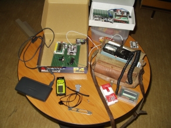
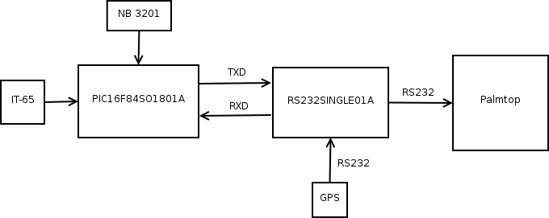
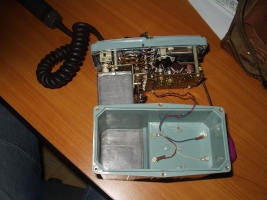
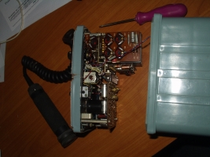

Zapisovač intenzity kosmického záření
Jakub Kákona
Zapisovač intensity ionisačního záření umožňuje systematický sběr dat vázaný na zeměpisné souřadnice. Například během letu v letadle.

| Parametr | Hodnota | Poznámka |
|---|---|---|
| Napájení | 5V | 4x 1,2V Ni-MH acu. |
| Spotřeba v klidu | cca 20mA | bez Palmtopu |
| Komunikace | 2x sériová linka RS-232 | |
| Komunikace s GPS | NMEA | sériová linka RS-232 |
Tento zapisovač byl vyvinut během Fyzikálního Týdne na FJFI ČVUT v Praze. Za účelem použití v miniprojektu Stanovení radiační zátěže od kosmického záření na palubě letadla.
Zařízení je z části postaveno z modulů stavebnice (kromě Palmtopu, do kterého se ukládají data a samotného detektoru radiace.) Celý zapisovač funguje vlastně jako komprimátor dvou datových toků, jednak z GPS geko 201 a potom ze scintilačního detektoru NB 3201 a případně z intezimetru IT-65.

Modul PIC16F84SO1801A je osazen procesorem PIC16F88, protože je potřeba A/D převodník pro zpracování logaritmického analogového signálu ze scintilátoru NB 3201. Připojení intenzimetru IT-65 je provedeno tak, že pulsy se z konektoru přivádí přímo na komparátor v procesoru a z něj do čítače odkud se programově čtou.
Dokumentace ke scintilačnímu detektoru NB 3201
Intensimetr IT-65:
 Původní zdrojový kód od celého zařízení se mi někam záhadně ztratil Doufám, že ho ale ještě někde objevím, protože i přes jeho jednoduchost byl docela pracný.
Program pracoval tak, že periodicky četl textový výstup z GPS přijímače a do něj doplňoval naměřenou hodnotu z čítače, nebo A/D převodníku.
Výsledný datový soubor ukládaný v palmtopu pak vypadal takto:
[datum a čas]N[souřadnice]E[souřadnice]G[intenzita]+[nadmořská výška]E0000N0000U0001*[číslo packetu]
060613081217N4943072E01405835G008+00465E0000N0000D0000*0019
060613081222N4943072E01405835G008+00462E0000N0000U0000*0033
060613081227N4943072E01405835G008+00461E0000N0000U0000*0030
060613081232N4943072E01405835G008+00462E0000N0000U0001*0025
060613081237N4943072E01405835G008+00461E0000N0000U0001*0024
060613081242N4943072E01405835G008+00462E0000N0000U0001*0028
060613081247N4943072E01405835G008+00462E0000N0000U0001*0029
060613081252N4943072E01405835G008+00461E0000N0000U0001*0034
{kind=link}
{kind=link}